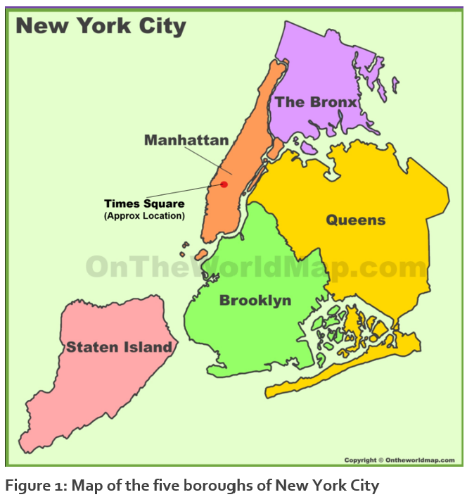
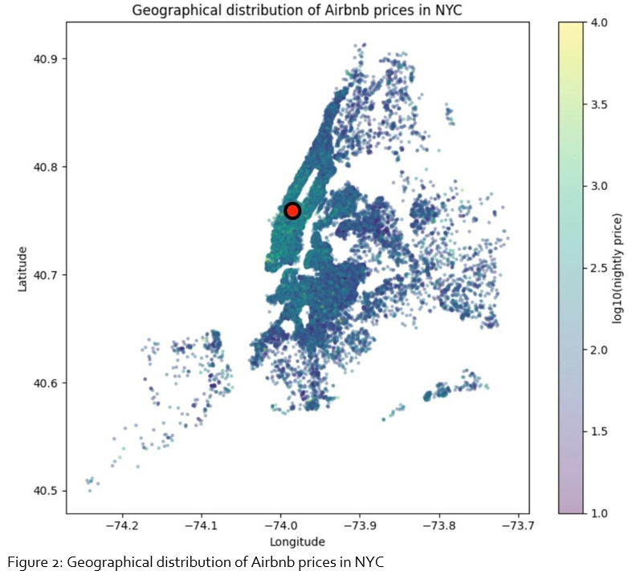
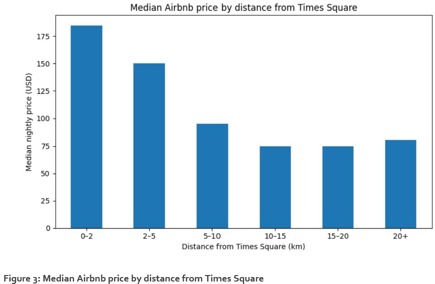
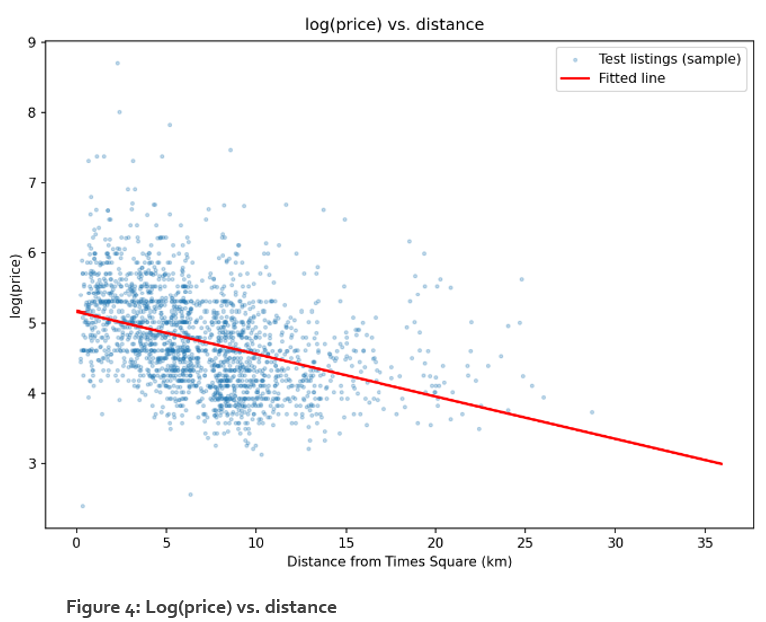
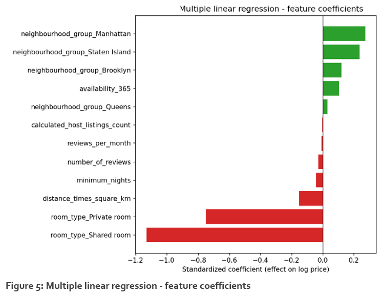
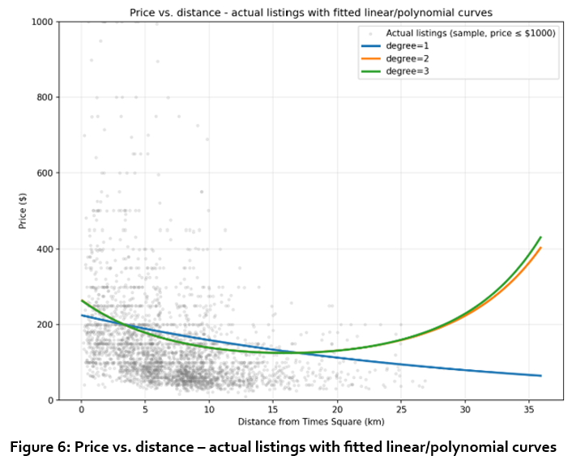
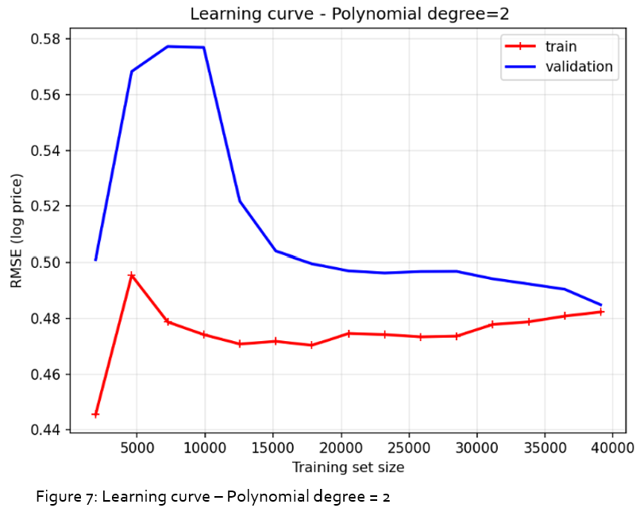
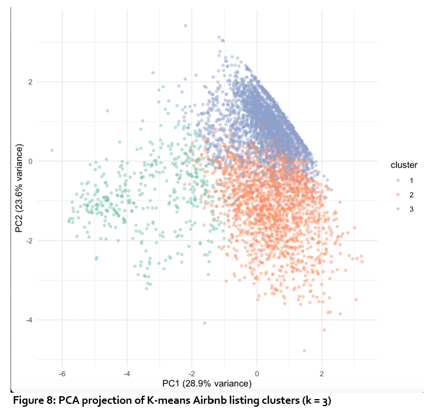

Team Project — Airbnb Listing Prices in New York City
Team F, Group 4: Damiano Tartarini, Adaeze Ugochukwu, Jeroen Vreijsen, Sarah Woodcock.
Research question: How is distance from Times Square associated with Airbnb listing prices in New York City, and what listing segments can be identified based on location and property characteristics?
Roles
| Member | Contribution |
|---|---|
| Jeroen Vreijsen | Data preparation; introduction; distance-to-Times-Square feature; mapping. |
| Damiano Tartarini | Regression modelling (linear, multilinear, polynomial) and its write-up. |
| Adaeze Ugochukwu | Clustering (k-means, elbow method, silhouette evaluation, cluster profiling). |
| Sarah Woodcock | Report structure, reference list, final formatting and submission. |
Meeting notes
Week 1 — assignment review
Reviewed the Kaggle Airbnb dataset and brainstormed possible question themes.
Week 2 — assignment breakdown
Split into four chunks, one per member. Jeroen to prepare data and hand to Adaeze (clustering) and Damiano (regression); Sarah to research supporting literature, start the reference list, and keep the report's structure cohesive.
Week 3 — model analysis and review
Working schedule agreed: data preparation (17 Aug), regression and clustering in parallel (21 Aug), draft report (27 Aug), final read-through (1–2 Sept), contingency window (3–6 Sept).
25 Aug 2026 — Team F catch-up
Attendees: Adaeze, Sarah, Jeroen, Damiano.
- Jeroen: introduction drafted; question refined to include listing segments; data cleaned (zero-value listings removed, null reviews set to zero); distance-to-Times-Square feature and map added.
- Damiano: regression steps talked through and justified; candidate references added. Distance alone gave R² = 0.15 — agreed this was low and needed investigating further (multilinear and polynomial approaches followed from this).
- Discussed whether outliers (e.g. "Billionaire's Row" listings) should be removed — agreed they were valid data points and, since regression is comparatively robust to them, kept them in rather than taking a logarithm purely to suppress them.
- Agreed a train/validation split was appropriate for the regression after a short debate on whether it was necessary for a model that is "just trying to fit the data."
Action items: Adaeze to finish clustering and notify Sarah; final check-in meeting scheduled; Sarah to circulate the draft report for review before then.
2 Sept 2026 — Team F catch-up
Attendees: Damiano, Jeroen, Sarah.
- Agreed the report answers the research question; read through end-to-end with minor clarity edits.
- Sarah to tidy formatting, find a couple of recent references for the clustering section, and fold image captions into the figures themselves so they don't count against the word limit.
- Final Word document to go to TurnItIn and to all team members on 3 Sept, with a short review window before Sarah submits.
Action items: all members to confirm acceptance of the final report and submit individual peer reviews.
Final report
Development Team Project — Project Report
By Damiano Tartarini, Adaeze Ugochukwu, Jeroen Vreijsen and Sarah Woodcock (Team F, Group 4)
Introduction
Airbnb provides short-term accommodation across many locations and price ranges in New York City. Location is an important factor in pricing (Deboosere et al., 2019). Therefore, we assume that distance from the most centrally located touristic area is associated with listing price. Times Square has been described as the "epicenter of NYC tourism" (Weaver, 2025). Thus, our research question is as follows:
How is distance from Times Square associated with Airbnb listing prices in New York City, and what listing segments can be identified based on location and property characteristics?
We used regression and clustering to identify different types of Airbnb listings. The main purpose of this research is to generate insights that could help Airbnb understand pricing patterns and different listing segments in New York City.

Adapted from: ontheworldmap.com/usa/city/new-york-city/nyc-boroughs-map.html
Data preparation
We cleaned the original 2019 Airbnb New York dataset (Dgomonov, 2019), containing 48,895 Airbnb listings. The cleaned version consisted of 48,884 listings. We added an extra column, distance_times_square_km, which calculates distance from Times Square using latitude and longitude.
Exploratory data analysis
We first visualised listing prices according to geographic location:

The red dot represents the location of Times Square. Higher prices are concentrated around Manhattan/Times Square. Listings further away are generally cheaper.
Next, we visualised the median Airbnb price by distance from Times Square:

Listings within 0–2 km of Times Square have a median price of $185. At 2–5 km, this falls to $150. At 5–10 km, it falls to $95. For a distance >10 km, the price is around $75.
Evidently, Airbnb prices tend to decrease as distance from Times Square increases. Interestingly, prices slightly increase from 20+ km, making the relationship not perfectly straight.
However, distance from Times Square may not be the only factor influencing prices. Borough, room type, quality, neighbourhood and other characteristics may also have an influence. Therefore, regression and clustering are used to further investigate these relationships.
Regression
Through regression, we predicted the value of price based on how one or more variables change. We first decided to transform price into its logarithmic form, log(price), to reduce the impact of outlying prices ($5–10k).
We checked multicollinearity amongst distance and borough. Numbers greater than 10 could represent severe multicollinearity, whilst lower numbers show reduced to no multicollinearity (Wooldridge, 2020). Distance had a Variance Inflation Factor (VIF) of 1.9. Borough analysis showed a VIF >10, which is high. Thus, the split of credit between borough and distance should not be taken as separate correlations.
Secondly, we split the data into a test and a training set, respectively containing 20% and 80% of the data. We used borough to stratify the split so as to avoid underrepresenting the rarest labels and to ensure the data splits each contain proportionate amounts of the overall data (Géron, 2025).
We used three different regression approaches and compared them:
- A simple linear regression on distance alone found each +1 km was associated with a ~5.9% price drop (R²=0.15).

- A multilinear regression approach with all features; controlling for room type and borough caused distance's effect to shrink, showing it was probably mediated by borough and room type.

- We also performed a polynomial regression approach to determine nonlinear relationships (Géron, 2025). We checked first with degree 2, which improved fit (R²=0.51), revealing price drops steeply near the centre and then flattens out. Degree 3 didn't add any significant improvement. In Figure 6, degree 1 is the linear model.

The degree-2 polynomial achieved a test RMSE of 0.488 (log-price units) and R² of 0.512, both an improvement over the plain linear model (RMSE 0.496, R² 0.496). This confirms that the true relationship between distance and price is not linear. Although the model predicts that price sky-rockets at some point, we feel this should be further investigated.

Ultimately, the learning curves graph showed train/validation RMSE converging closely. This shows that the model fairly predicts price, without overfitting the data (Géron, 2025).
As there were no signs of overfitting, we chose not to use any regularisation technique on the model.
Clustering
Clustering was used to identify distinct groups of Airbnb listings with similar location and property characteristics (Géron, 2025).
The optimal number of clusters was evaluated using the elbow method — identifying the point at which the data turns a corner and no longer grows (Herdiana et al., 2025) — and average silhouette scores.
Although k = 2 produced the highest silhouette score (0.392, from a range of −1 to +1), this solution was considered too coarse to provide meaningful segmentation. The three-cluster solution achieved the next highest silhouette score (0.252) and corresponded with the point at which improvements in within-cluster variation began to flatten; therefore, k = 3 was selected.
K-means clustering was performed on six scaled variables. Min-max scaling and standardisation techniques as described by Kelsy Cabello-Solorzano et al. (2023) were used. Figure 8 uses principal component analysis to visualise the resulting clusters in two dimensions. Clustering was not performed on the principal components themselves. Together, PC1 and PC2 explain 52.5% of the variance. The clusters occupy distinguishable regions of the PCA space, although some overlap remains.

Cluster profiling (Table 1) indicates that Cluster 1 represents a long-stay segment, with a 30-night median minimum stay, high availability (316 days) and hosts with a median of 16 listings. Cluster 2 represents short-stay listings, with the lowest median price ($95), greatest distance from Times Square (8.7 km) and highest review activity (2.12 reviews/month). Cluster 3 comprises the largest segment (54.6%), characterised by zero median availability and low review activity.
| Cluster 1 | Cluster 2 | Cluster 3 | |
|---|---|---|---|
| Size | 4,594 (9.4%) | 17,608 (36.0%) | 26,682 (54.6%) |
| Median price | $150 | $95 | $115 |
| Median distance from Times Sq. | 3.9 km (closest) | 8.7 km (furthest) | 5.7 km (middle) |
| Median minimum nights | 30 | 2 | 3 |
| Median # reviews | 1 | 28 | 2 |
| Median reviews/month | 0.09 | 2.12 | 0.12 |
| Median availability (days/365) | 316 | 197 | 0 |
| Median host listings count | 16 | 1 | 1 |
| Dominant room type | Entire home/apt (68%) | Private room (54%) | Entire home/apt (55%) |
| Dominant borough | Manhattan (70%) | Brooklyn (44%), spread across boroughs | Manhattan (49%) / Brooklyn (43%) |
Similarly to regression, cluster prices decline with increasing distance from Times Square ($150, $115 and $95), but listing segments also differ in host, availability and booking characteristics. However, the moderate silhouette score and overlap in the PCA projection indicate that these segments should be interpreted as broad listing profiles rather than sharply separated groups.
Conclusion
Listings further from Times Square tend to be cheaper, although the relationship isn't perfectly linear. But borough, room type and other listing characteristics also explain a large part of price differences. The clustering backed this up, revealing three broad types of listings with different prices, availability, host behaviour and review activity. Overall, Airbnb pricing reflects a mix of location and listing characteristics, rather than any single factor.
References
- ChatGPT conversation on data cleaning and Exploratory Data Analysis: chatgpt.com/share/6a88935e-4bc8-83eb-9413-8584ef5f1ff3
- Deboosere, R., Kerrigan, D.J., Wachsmuth, D. and El-Geneidy, A. (2019) 'Location, location and professionalization: a multilevel hedonic analysis of Airbnb listing prices and revenue', Regional Studies, Regional Science, 6(1), pp. 143–156. doi: 10.1080/21681376.2019.1592699.
- Dgomonov. 2019. New York City Airbnb Open Data. [Online]. [3 September 2026]. Available from: kaggle.com/datasets/dgomonov/new-york-city-airbnb-open-data
- Géron, A. (2025) Hands-On Machine Learning with Scikit-Learn and PyTorch: Concepts, Tools, and Techniques to Build Intelligent Systems. 1st edn. Sebastopol, CA: O'Reilly Media.
- Herdiana, I., Alfin, K.M., Triyani, Nur, E.M. and Renny (2025). A More Precise Elbow Method for Optimum K-means Clustering. [online] arXiv.org. Available at: arxiv.org/abs/2502.00851 [Accessed 3 Sept. 2026].
- Kelsy Cabello-Solorzano, de, O., Peña, M.A., Correia, L. and Tallón-Ballesteros, A.J. (2023). The Impact of Data Normalization on the Accuracy of Machine Learning Algorithms: A Comparative Analysis. Lecture notes in networks and systems, 750, pp. 344–353. doi:10.1007/978-3-031-42536-3_33.
- Ontheworldmap.com team (no date) New York City boroughs map. Available at: ontheworldmap.com/usa/city/new-york-city/nyc-boroughs-map.html (Accessed: 29 August 2026).
- Weaver, S. (2025) 'The Times Square, New York guide', Time Out New York, 2 May. Available at: timeout.com/newyork/things-to-do/new-york-attractions-times-square (Accessed: 29 August 2026).
- Wooldridge, J.M. (2020) Introductory Econometrics: A Modern Approach. 7th edn. Cengage.
Feedback from tutor
What was done well:
The report presents a clear business question and maintains a consistent focus on the relationship between Airbnb prices and distance from Times Square. The data preparation process is explained clearly, and the creation of the distance feature is relevant to the research question. The report applies both regression and clustering techniques, demonstrating an understanding of the classical machine learning methods required for the assignment. Visualisations are used throughout the report to support the analysis and help communicate the key findings. The discussion recognises that price is influenced by multiple factors and does not rely solely on distance as an explanation.
What could be improved:
The business rationale is quite limited. You should have explained more clearly why this question is important for Airbnb and how the findings could support business decisions. The methodology lacks some depth. While the modelling approaches are described, there is limited critical discussion of why specific methods were selected and what their limitations are. The clustering analysis is relatively brief. The identified clusters are described, but there is limited interpretation of how Airbnb could use these segments in practice. The business impact and recommendations are not developed sufficiently. The report focuses mainly on the technical findings rather than translating them into actionable business insights. Some conclusions are based on observed relationships, but stronger critical evaluation of the results and model performance would improve the quality of the discussion.
General comments for future work:
This report demonstrates a reasonable understanding of regression and clustering techniques and applies them appropriately to the dataset. For future work, you should place greater emphasis on explaining the business value of the analysis and linking technical findings to practical recommendations. You could strengthen the report by providing more critical evaluation of model results, discussing limitations in greater detail, and explaining how the identified clusters could support decision-making. Overall, the work shows a good effort in applying machine learning techniques, but further analysis, critical discussion, and business interpretation would improve the report.